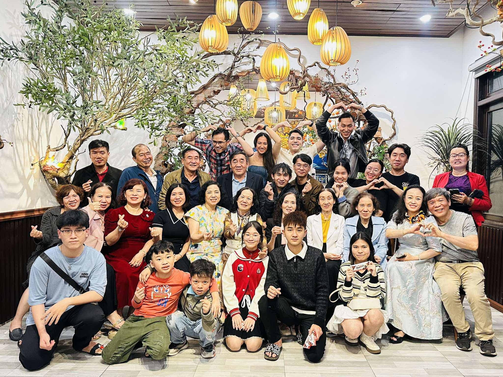
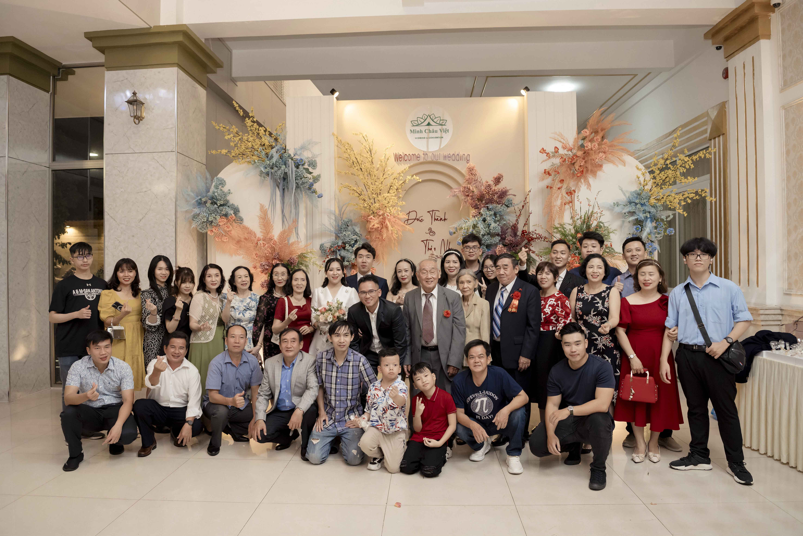

GIA ĐÌNH PHAN ĐỨC TẠI ĐÀ NẴNG
Từ năm 1960, ông bà nội đưa các con vào định cư tại Đà Nẵng. Bảng gia phả này bắt đầu lưu giữ thông tin từ đời thứ VI trở về sau. Đây là nhịp cầu để các thế hệ tương lai theo dõi, kết nối và chủ động cập nhật thêm thành viên mới cho đại gia đình.
Nội dung đang được cập nhật...

Họp mặt gia đình năm 2025

Ảnh gia đình tại đám cưới Thành - Nhi năm 2023
Nội dung đang được cập nhật...